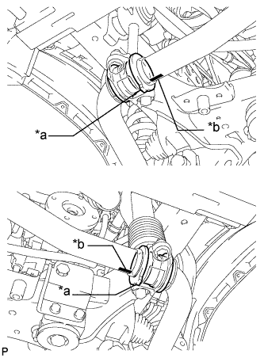
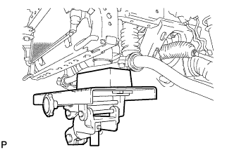
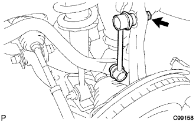

ПЕРЕДНИЙ АМОРТИЗАТОР > УСТАНОВКА |
| 1. ВРЕМЕННО УСТАНОВИТЕ ПЕРЕДНИЙ АМОРТИЗАТОР С ЦИЛИНДРИЧЕСКОЙ ВИНТОВОЙ ПРУЖИНОЙ (при наличии пневматической подвески). |
Установите цилиндрическую винтовую пружину на кузов автомобиля, обратив ее нижний конец к задней стороне автомобиля.
| *a | Нижний конец |
| *b | Наружная сторона |
| *c | Задняя сторона |
 |
Заверните 3 гайки на верхней стороне переднего амортизатора с цилиндрической винтовой пружиной.
 |
Предварительно установите болт, шайбу и гайку, как показано на рисунке.
 |
Используя SST, установите кронштейн и закрепите его гайкой.
 |
Установите привод амортизатора и закрепите его 2 болтами с помощью шестигранной головки 4 мм.
Введите в зацепление 3 зажима и подсоедините разъем.
| 2. ПРЕДВАРИТЕЛЬНО УСТАНОВИТЕ ПЕРЕДНИЙ АМОРТИЗАТОР С ЦИЛИНДРИЧЕСКОЙ ВИНТОВОЙ ПРУЖИНОЙ (для моделей без пневматической подвески) |
Установите цилиндрическую винтовую пружину на кузов автомобиля, обратив ее нижний конец к задней стороне автомобиля.
| *a | Нижний конец |
| *b | Наружная сторона |
| *c | Задняя сторона |
 |
Заверните 3 гайки сверху переднего амортизатора с цилиндрической винтовой пружиной.
|
Предварительно установите болт, шайбу и гайку, как показано на рисунке.
| 3. УСТАНОВИТЕ ПЕРЕДНИЙ СТАБИЛИЗАТОР ПОПЕРЕЧНОЙ УСТОЙЧИВОСТИ (для моделей с KDSS) |
|  |
Установите 2 втулки нижних кронштейнов переднего стабилизатора на штангу переднего стабилизатора.
| *a | Выступ |
| *b | Положение метки |
|  |
Обратив идентификационные метки на штанге переднего стабилизатора вниз, поддомкратьте штангу переднего стабилизатора с помощью домкрата.
 |
Установите штангу переднего стабилизатора и 2 нижних кронштейна переднего стабилизатора, закрепив их 4 болтами.
| *1 | Стойка стабилизатора |
| *2 | Цилиндр стабилизатора |
| 4. УСТАНОВИТЕ КОНЦЕВОЙ КРОНШТЕЙН ПЕРЕДНЕГО СТАБИЛИЗАТОРА (для моделей с KDSS) |
 |
Установите 2 кронштейна переднего стабилизатора и 2 втулки стоек переднего стабилизатора, закрепив их 4 болтами.
| 5. УСТАНОВИТЕ ПЕРЕДНИЙ СТАБИЛИЗАТОР ПОПЕРЕЧНОЙ УСТОЙЧИВОСТИ (для моделей без KDSS) |
| 6. УСТАНОВИТЕ ЛЕВЫЙ КРОНШТЕЙН ПЕРЕДНЕГО СТАБИЛИЗАТОРА № 1 (для моделей без KDSS) |
Закрепите левый кронштейн переднего стабилизатора № 1 с помощью 2 болтов.
| 7. УСТАНОВИТЕ ПРАВЫЙ КРОНШТЕЙН ПЕРЕДНЕГО СТАБИЛИЗАТОРА № 1 (для моделей без KDSS) |
| 8. ПОДСОЕДИНИТЕ ЛЕВУЮ СТОЙКУ ПЕРЕДНЕГО СТАБИЛИЗАТОРА В СБОРЕ (для моделей без KDSS) |
|  |
Подсоедините стойку стабилизатора к поворотному кулаку и закрепите гайкой.
| 9. ПОДСОЕДИНИТЕ ПРАВУЮ СТОЙКУ ПЕРЕДНЕГО СТАБИЛИЗАТОРА В СБОРЕ (для моделей без KDSS) |
| 10. УСТАНОВИТЕ СКОБУ ЭЛЕМЕНТА ПЕРЕДНЕЙ ПОДВЕСКИ В СБОРЕ |
Установите 2 скобы элемента подвески и закрепите их 6 болтами.
| 11. УСТАНОВИТЕ ЗАЩИТУ КАРТЕРА ДВИГАТЕЛЯ № 1 В СБОРЕ |
 |
Присоедините защиту картера двигателя к кузову автомобиля, как показано на рисунке.
Вверните 4 болта.
| 12. УСТАНОВИТЕ НИЖНЮЮ НАКЛАДКУ ПЕРЕДНЕГО БАМПЕРА |
Установите нижнюю облицовку переднего бампера и закрепите ее 5 болтами и фиксатором.
| 13. УСТАНОВИТЕ ПЕРЕДНЕЕ КОЛЕСО |
| 14. ДОБЕЙТЕСЬ УСТОЙЧИВОСТИ ПОДВЕСКИ |
Опустите автомобиль.
Стабилизируйте подвеску, несколько раз покачав автомобиль вверх-вниз.
| 15. ЗАТЯНИТЕ ПЕРЕДНИЙ АМОРТИЗАТОР С ЦИЛИНДРИЧЕСКОЙ ВИНТОВОЙ ПРУЖИНОЙ |
|
Затяните гайку.
| 16. ПРОВЕРЬТЕ И ОТРЕГУЛИРУЙТЕ УГЛЫ УСТАНОВКИ ПЕРЕДНИХ КОЛЕС |
Проверьте и отрегулируйте углы установки передних колес (Нажмите здесь).